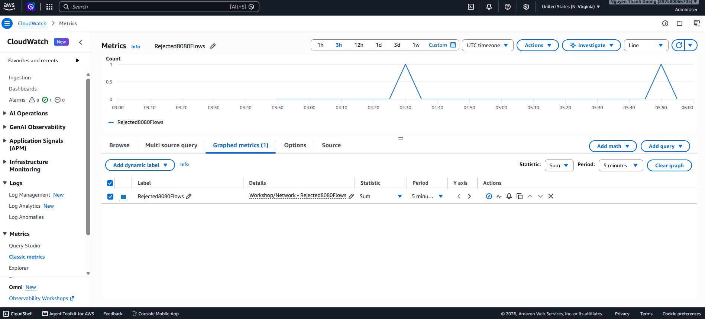
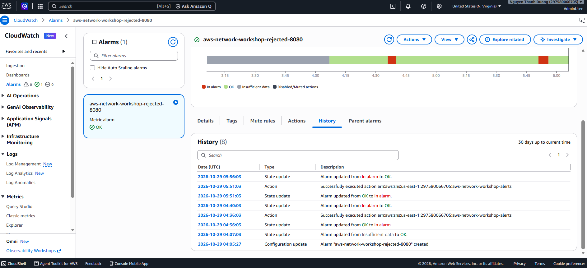
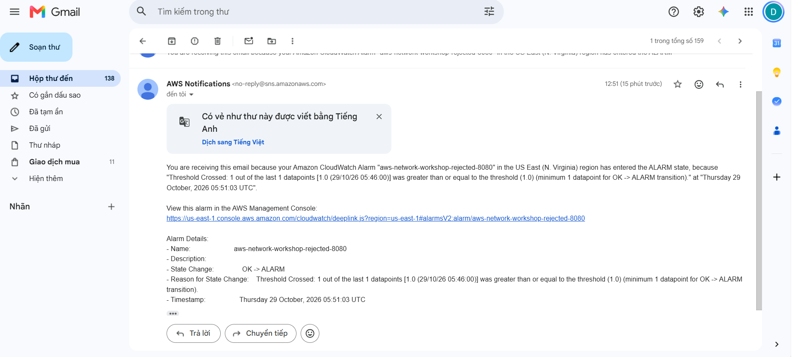

Trong phần này, chúng ta tổng hợp bằng chứng và đánh giá kết quả triển khai hệ thống giám sát mạng trên AWS.
Việc đánh giá dựa trên dữ liệu thực tế từ:
Các ảnh đã chụp ở những phần trước có thể được sử dụng lại nếu thể hiện đầy đủ thông tin cần đánh giá.
Sử dụng Region US East (N. Virginia) — us-east-1 khi mở metric, log và alarm.
Các tài nguyên cần đối chiếu:
| Tài nguyên | Giá trị |
|---|---|
| Log group | /workshop/network/flowlogs |
| Metric namespace | Workshop/Network |
| Metric name | Rejected8080Flows |
| Alarm | aws-network-workshop-rejected-8080 |
| SNS topic | aws-network-workshop-alerts |
| Dashboard | aws-network-workshop-dashboard |
Chọn một đợt kiểm thử đã thực hiện ở phần 5.5 để đối chiếu các bằng chứng.
Kiểm tra địa chỉ nguồn, địa chỉ đích, cổng và thời gian để bảo đảm các dữ liệu đang đánh giá thuộc cùng đợt kiểm thử.
Mở:
CloudWatch → Dashboards → aws-network-workshop-dashboard
Chọn khoảng thời gian chứa đợt kiểm thử, sau đó bấm Refresh.
Kiểm tra ba thành phần:
| Thành phần | Nội dung cần xác minh |
|---|---|
| Biểu đồ metric | Rejected8080Flows có dữ liệu, Statistic Sum và Period 5 minutes |
| Alarm status | Hiển thị đúng tên alarm và trạng thái hiện tại |
| Bảng phân tích log | Có các cột action, dstPort và FlowRecords với kết quả phù hợp |
Widget trạng thái alarm hiển thị trạng thái hiện tại. Alarm có thể đã trở về OK sau đợt thử.
Để xác minh lần cảnh báo trước đó, mở History của alarm thay vì chỉ dựa vào trạng thái hiện tại trên dashboard.
Vị trí chụp ảnh 01: Toàn bộ dashboard, nhìn thấy tên dashboard và cả ba widget.

Với mỗi mục, ghi một trong ba trạng thái:
Điền cột Kết quả sau khi đối chiếu thực tế.
| Nội dung | Điều kiện đánh giá Đạt | Bằng chứng | Kết quả |
|---|---|---|---|
| Truy cập ứng dụng | HTTP cổng 80 hiển thị trang web | Ảnh trình duyệt | — |
| Kiểm soát kết nối | Kết nối TCP cổng 8080 thất bại | Kết quả PowerShell | — |
| Thu thập nhật ký | Có bản ghi đúng nguồn, đích, cổng 8080, REJECT và OK | Bản ghi Flow Logs mở rộng | — |
| Tạo metric | Rejected8080Flows có giá trị Sum từ 1 trở lên trong đợt thử | Biểu đồ metric | — |
| Kích hoạt cảnh báo | Alarm chuyển ALARM từ dữ liệu kiểm thử | Alarm History | — |
| Gửi thông báo | Nhận email cảnh báo có tên alarm và thời gian tương ứng | Email từ SNS | — |
| Hiển thị tập trung | Dashboard được lưu và có đủ ba widget | Dashboard tổng hợp | — |
Email kiểm thử trực tiếp với tiêu đề Workshop 5.7 - SNS delivery test xác minh chức năng gửi thư của SNS.
Để đánh giá luồng cảnh báo từ CloudWatch, sử dụng email chứa tên alarm và trạng thái ALARM của đợt kiểm thử.
Mở:
CloudWatch → Alarms → aws-network-workshop-rejected-8080 → History
Tìm sự kiện chuyển sang ALARM trong đợt kiểm thử và ghi lại thời gian.
Đối chiếu với các mốc:
| Mốc | Ý nghĩa | Nguồn | Giá trị thực tế |
|---|---|---|---|
| T0 | Thời gian bắt đầu kiểm thử | Get-Date hoặc thời gian đã ghi ở phần 5.5 | — |
| T_flow | Thời gian bản ghi lưu lượng | Timestamp trong CloudWatch Logs | — |
| T_alarm | Thời gian alarm chuyển ALARM | Alarm History | — |
| T_email | Thời gian nhận email | Hộp thư đã đăng ký SNS | — |
Thống nhất múi giờ trước khi so sánh.
Giờ Việt Nam = UTC + 7 giờ
Timestamp của bản ghi Flow Logs trong CloudWatch tương ứng với thời gian bắt đầu flow. Thời điểm CloudWatch nhận bản ghi là một mốc khác.
Khi đánh giá độ trễ từ lúc bắt đầu phép thử, sử dụng T0 đã ghi thực tế.
Vị trí chụp ảnh 02: Alarm History có tên alarm, sự kiện chuyển ALARM và thời gian.

Nếu có đủ dữ liệu, tính:
Độ trễ cảnh báo = T_alarm - T0
Độ trễ nhận email = T_email - T0
Ghi kết quả đo:
| Chỉ số | Kết quả thực tế |
|---|---|
| Độ trễ cảnh báo | — |
| Độ trễ nhận email | — |
Nếu chưa ghi T0 hoặc thiếu một mốc cần thiết, ghi Chưa đo được cho chỉ số tương ứng.
Giữ độ chính xác phù hợp với dữ liệu hiển thị. Nếu hộp thư chỉ hiển thị đến phút, không báo cáo kết quả chính xác đến giây.
Vị trí chụp ảnh 03: Email cảnh báo thể hiện tên alarm, trạng thái ALARM và thời gian.

Đối chiếu bằng chứng với các khả năng sau:
| Khả năng | Nội dung đánh giá |
|---|---|
| Kiểm soát lưu lượng | Security Group áp dụng quy tắc truy cập đã cấu hình |
| Thu thập tự động | Flow Logs ghi nhận và chuyển dữ liệu mạng đến CloudWatch Logs |
| Tạo dữ liệu giám sát | Metric filter chuyển bản ghi khớp thành điểm dữ liệu |
| Cảnh báo tự động | Alarm đánh giá ngưỡng và thực hiện hành động khi chuyển trạng thái |
| Gửi thông báo | SNS chuyển thông báo đến email đã xác nhận |
| Quan sát tập trung | Dashboard tập hợp metric, trạng thái alarm và bảng phân tích log |
| Phân tích sự cố | Logs Insights hỗ trợ lọc và thống kê dữ liệu kiểm thử |
Chỉ ghi nhận một khả năng đã được xác minh khi có bằng chứng tương ứng.
Trong workshop này, hạ tầng được triển khai qua AWS Console. Phạm vi tự động hóa được cấu hình là quá trình thu thập log, tạo metric, đánh giá alarm và gửi thông báo.
Metric filter đang theo dõi địa chỉ nguồn, địa chỉ đích và cổng 8080 cụ thể.
Khi IP thay đổi, cần cập nhật bộ lọc để tiếp tục theo dõi đúng lưu lượng.
Flow Logs cần thời gian tổng hợp và chuyển log. Aggregation interval một phút không bảo đảm toàn bộ quá trình cảnh báo hoàn tất trong một phút.
Rejected8080Flows đếm các bản ghi khớp bộ lọc.
Số bản ghi có thể khác số lần chạy lệnh, số lần tải lại trang hoặc số gói tin do lưu lượng được tổng hợp thành flow records.
Metric filter xử lý dữ liệu mới sau khi được tạo và không tính lại log cũ.
Cấu hình xử lý dữ liệu thiếu có thể ảnh hưởng đến trạng thái OK của alarm. Cần đối chiếu log, metric, lịch sử alarm và email để đánh giá toàn bộ quá trình.
Thông báo alarm được kích hoạt khi có lần chuyển trạng thái phù hợp. Các kết nối thử bổ sung không tạo một email mới nếu alarm tiếp tục giữ nguyên ALARM.
Hoàn thiện bảng dựa trên kết quả thực tế:
| Nội dung | Nhận xét |
|---|---|
| Các hạng mục đã xác minh đạt | — |
| Các hạng mục chưa đạt hoặc chưa xác minh | — |
| Kết quả đo độ trễ, nếu có | — |
| Những lỗi đã gặp và cách khắc phục | — |
| Giới hạn của cấu hình hiện tại | — |
| Nội dung cần cải thiện | — |
Sau khi hoàn tất đánh giá và lưu bằng chứng, chuyển sang phần 5.9 — Dọn dẹp tài nguyên.